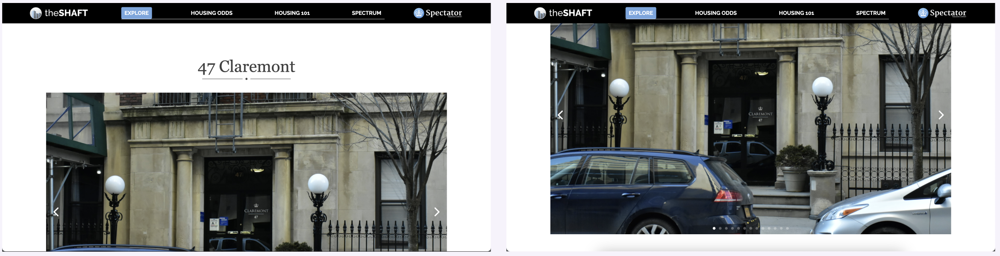
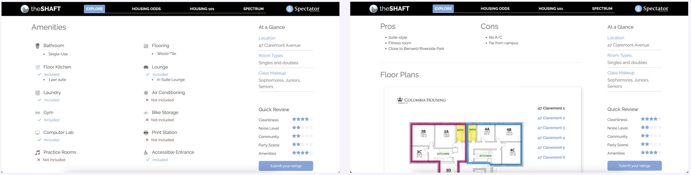
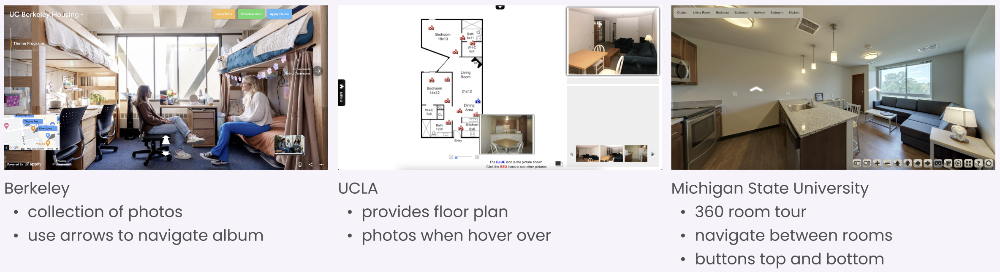
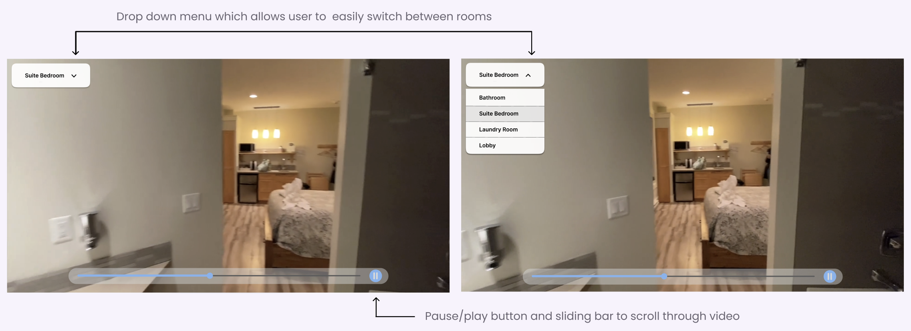

theShaft Redesign Case Study
Team: Myself (Product Manager), Muchen Guo (Head of Product), Polly Arnan (Associate), Jane Lim (Associate), Sarah Alsharif (Associate)
Company: Columbia Daily Spectator
Duration: September 2023 - Present
Tools: Figma
Overview
In this project, our team is dedicated to redesign the individual dorm pages for theShaft. The purpose of this website is to assist students in gaining a comprehensive understanding of the campus housing options at Columbia University. Our primary objective is to integrate a 360 room tour feature that would offer immersive and comprehensive viewing of the campus dorms, providing students with invaluable information to make informed housing decisions. Please keep in mind that this project is ongoing.
1 - Current Design
Two main things to highlight on the current page are (1) the first image that is on the screen is too big for one's screen and (2) the information on the side bar sticks to the page.
 2 - Pain Points
We recognized that some of the pain points of the current website included:
- Inadequate view of room
- Incorrect layout sizing
- Outdated reviews
3 - Research
In our research, we mainly focused on the first pain point.
To gain a better understanding of how to approach the redesign, we conducted a comparative analysis of other universities'
dorm websites to explore how they allowed students to view their prospective dorms. Some examples include photos with
panoramic views, real-life floor plans, videos, and interactive room tours.
These were some designs we looked at during the comparative analysis:

After conducting a comprehensive analysis, we presented our findings to randomly sampled Columbia University students
through a short interview. This interview enabled us to ascertain the efficacy of our identified features and also to
gain valuable insights into the students' interaction patterns with other online platforms, thereby informing our
decision-making process regarding feature inclusion and exclusion.
The main conclusions are as follows:
- Users prefer simplistic design features that are intuitive; less is more
- Users would rather see their room in a separate, full screen tab if utilizing the 360 room tour or video
- Users prefer if we stick to one type of multimedia
- Managing board decided that although 360 room tour would be most ideal for the students, the current
budget does not support it
4 - Design Opportunities
- Video Room Tour: Students can play a video of their choice of dorm in a separate, full screen tab to explore
spaces that photos cannot otherwise depict. The full screen tab will have a small drop down menu for users to
choose which room they would like to see.
- Layout Resizing: We will re-do some of the layout so that students can now see entire photos or features without having
to scroll. This would help the readability and comprehension of the website.
5 - Mockup Design
As this project has already been worked on in the past, my team and I merely altered the existing prototype to include a new page with a video room tour as shown in the preliminary prototype. We are still exploring more prototype ideas.



6 - Current Assessments
As this is an ongoing project, we are now conducting further interviews on the protypes we have made to finalize the placement of buttons on the page that would allow for the best and easiest user experience. Following the analysis of the data, we will design the final protype version that will be sent off to the engineering team.
7 - Reflection On Current Progress
In my first project as a product manager, I have had the privilege of gaining invaluable experience in leading open discussions aimed at enhancing our existing website. My responsibilities have extended to orchestrating the interview processes, making definitive design decisions following analysis, and communicating seamlessly cross-sectionally. I am excited to continue learning more as a product manager. Please stay tuned as I will continue to share more about this re-design throughout this semester!